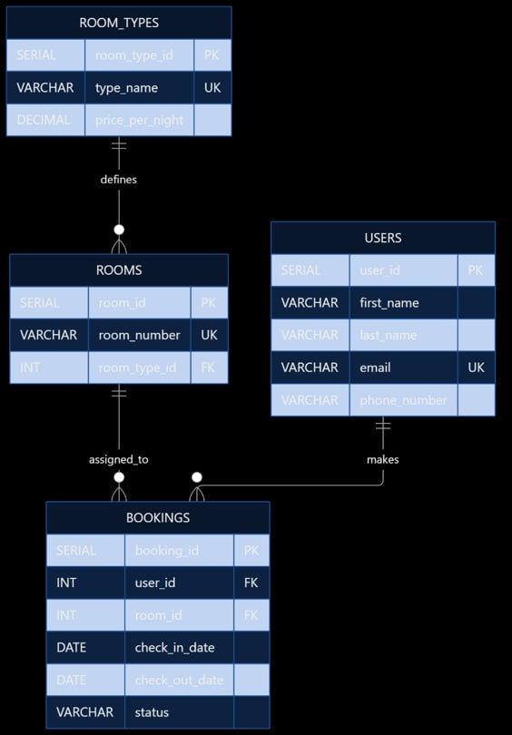
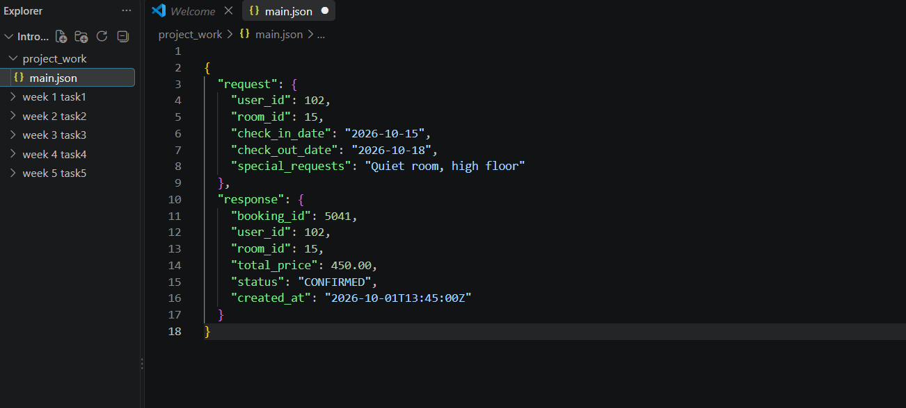

This page collects the content of our team reports (Task 06, Data task, Task 07) and shows where each idea appears in the working website.
Task 07 · Part A
1. Project overview
The problem
A small hotel with 40 rooms takes bookings by phone and writes them in a paper book. Receptionists make mistakes, two guests can get the same room, and guests cannot book at night.
The proposed system
A hotel booking website with a database and a staff panel. The guest chooses dates and a room, pays by card, and receives a confirmation by email. The staff see all bookings in one place.
Users
Guests book and pay online · Receptionists see and change bookings · Hotel manager reports
Deadline and budget
12 weeks and 15,000 USD (developers, payment service, hosting, testing and staff training).
D2 Booking database and staff admin panel → Staff panel
D3 Payment and confirmation message integration → payment step and email preview in the booking flow
Outside scope
A mobile app for iOS and Android
Connection to other booking sites (for example, Booking.com)
Task 06 · Digital Transaction Analysis
2. System map of the booking transaction
The transaction: a guest books and pays for a hotel room on the hotel website. The guest chooses the dates and the room, pays by card, and gets a booking confirmation by email.
System map from Task 06: 1 booking request · 2 save room · 3 saved · 4 charge card · 5 paid · 6 send email · 7 confirmation.
Part
What happens
Where in this website
Client
The guest uses a phone or computer browser, chooses the room and dates and clicks “Pay”.
booking.html + js/booking.js
Request
HTTPS request with room ID, check-in and check-out dates, guest name and email, and a payment token (not the real card number).
Request JSON built in booking.js (see the “Show JSON” box after booking)
Server
Checks the room is free, calculates the price, saves the booking and marks the room as taken. Then calls the two external APIs.
js/api.js (mock server)
Payment API
Receives the token and the price, takes the money and answers “success” or “failed”.
Payment.charge() in api.js
Email/SMS API
After successful payment the server asks the email service to send the confirmation.
Email preview on the confirmation screen
Response
Booking number, status (confirmed or failed) and a short message. The guest sees the confirmation page.
showResult() in booking.js
Task 06 · Section 3
3. Three possible failures and how the site handles them
Network / latency
Problem: the connection breaks after “Pay”. The guest clicks again and may pay two times.
In the site: the Pay button is disabled while waiting, and every attempt has an idempotency key. The server returns the saved answer for the same key, so there is no second charge. A payment timeout leaves the booking PENDING.
Database / ACID
Problem: two guests book the last free room at the same time. Both read “free” before either saves. Breaks Isolation and Consistency.
In the site: check and save happen inside one lock, and a unique rule refuses a second booking for the same room and date. Run the 50-guest test →
API / security
Problem: the payment key is visible in the website code, or the server trusts a price sent by the client.
In the site: the page sends only a token, the request has no price, and the server calculates the total. No secret key exists in any JavaScript file.
Task 06 · Section 4
4. CIA analysis: double booking
Chosen failure: Database / ACID, double booking of the same room. Most important CIA principle: Integrity.
Why Integrity
Integrity means that data is correct and not changed in a wrong way. The most important data in a hotel is “one room = one guest for one date”. A double booking makes it wrong.
The solution
One database transaction for the whole booking step, and a lock on the room for the chosen dates. The server confirms only after payment succeeds. If payment fails, the transaction is rolled back and the room is free again.
Second safety layer
A unique constraint: even if the server code has a bug, the database does not accept a second booking for the same room on the same date.
Step to protect first (Part B): the step where the server checks that the room is free and saves the booking. The payment step and the email step depend on it.
Data task · Parts 1 and 2
5. Data and database design
Entity-relationship diagram

ER diagram: PK = primary key, FK = foreign key, UK = unique key.
Four tables, three relationships:
ROOM_TYPES defines ROOMS: one type (Standard, Deluxe, Suite) has many rooms. The price is stored once, in the type.
ROOMS are assigned to BOOKINGS: one room can have many bookings over time.
USERS make BOOKINGS: one guest can make many bookings. email is unique.
Where each table appears in the site
Table
Used in
ROOM_TYPES
Room cards on Home, “Room type” dropdown and price in the booking form
ROOMS
Room number shown after booking, room board in the staff panel
USERS
Step 2 of the form: first name, last name, email, phone number
BOOKINGS
Dates, status, “My bookings”, staff table
The first draft of the Data task listed total_price in BOOKINGS and kept the room type inside ROOMS. The ER diagram improves this by moving the type and price to ROOM_TYPES. The site keeps total_price in each booking as well, because the server must lock the price at booking time (see below).
Data types
Data
Type
Where stored
Guest name and phone number
Structured
Predefined text/varchar fields in SQL
Payment amount and booking dates
Structured
Numeric and date/timestamp fields
Booking confirmation invoice
Semi-structured
JSON/XML payload sent via API and generated receipts
Special requests and hotel reviews
Unstructured
Free-form text comments written by guests
Data quality: check_in_date
Wrong or inconsistent: overbooking, or empty rooms when guests arrive.
Missing: the system cannot process payment or issue room keys.
Old: historical dates clutter live inventory and give wrong availability counts.
In the site: date pickers have a min date, check-out must be after check-in, and the server validates the dates again.
Data → Information → Decision
Data
Daily timestamps, room categories and booking prices for every reservation over 6 months.
Information
Deluxe rooms have 95% occupancy on weekends, while Standard rooms are only 40% occupied on weekdays.
Decision
Launch dynamic pricing: raise weekend Deluxe rates by 15% and offer a weekday discount package on Standard rooms.
API data contract (JSON)
The backend decision: the server calculates and locks total_price at booking creation and stores it as DECIMAL. This is Reliable and Secure: the browser cannot tamper with the price, and there are no floating-point rounding errors.

Screenshot from the Data task: JSON request and response.
Statuses: PENDINGCONFIRMEDCANCELLED
The example: room 15, 3 nights → 450.00. Our website reproduces it: room 15 is a Deluxe room at 150 per night.
Knowledge in an experienced employee’s head
An experienced receptionist knows that room 204 is next to the elevator and noisy at night, and that a regular guest wants a quiet room on a high floor. This is not in the database, so a new employee does not know it. To save and share it:
Add a room_notes field to ROOMS and a preferences field for returning guests in USERS.
Create a simple internal knowledge base (wiki or shared document) with tips for each room and for handling overbooking.
Ask experienced staff to train new employees and review the notes every few months.
In the site: room_notes exists in the seed data. Hover room 204 in the room board. When a guest writes “quiet room, high floor”, the server gives a quiet high-floor room, and noisy rooms are given last.
Task 07 · Part A
6. Project plan
Work Breakdown Structure (WBS)
No.
Work package
Deliverable
Owner
1.1
Design the guest screens (search, room choice, payment page)
D1 Guest website
Akbayev Anzor
1.2
Build the search and booking pages
D1 Guest website
Khassen Iliyas
2.1
Design the database and booking rules (one room, one guest, one date)
D2 Database and staff panel
Zinullin Nursultan
2.2
Build the staff admin panel
D2 Database and staff panel
Akbayev Anzor
3.1
Connect the payment API
D3 Payment and messages
Khassen Iliyas
3.2
Set up email confirmations
D3 Payment and messages
Zinullin Nursultan
Risks and actions
No.
Risk
Action
1
Two guests book the same room at the same time (double booking).
One database transaction and a unique rule for room and date. Test with many requests at the same time.
2
The payment service is slow or not available.
Show a clear “pending” status and do not take payment twice. Receptionists can take payment at the hotel as a backup.
Acceptance criteria
A guest can book and pay in less than 3 minutes and receives the confirmation email in less than 1 minute.
In a test with 50 requests at the same time for one room, only one booking is saved, and no booking is lost in 100 test bookings. → Run both tests in the staff panel
Project closure actions
Train the receptionists in two sessions and give them a short user guide.
Get written approval from the hotel manager and hold a lessons-learned meeting.
Task 07 · Part B · Implementation strategy
7. Chosen strategy: pilot implementation
A bug in saving bookings has an unknown cause, so a full launch is too risky. In a pilot, only 10 rooms and two receptionists use the new system first. The pilot is postponed by a few days to fix the problem.
Before launch
Find the cause in server and database logs, then fix it.
Test again: 200 test bookings and 50 bookings at the same time for one room.
Every booking must appear in the database.
Add an error message and a daily check of bookings against payments.
During transition
Receptionists write each booking in the paper book and in the system.
Every evening they compare both lists.
Stop and go rules
If data is lost again, stop the pilot and use the manual process only.
Open all rooms after two weeks without lost data.
Task 06, Task 07 · Team
8. Team and responsibilities
Khassen Iliyas
Frontend and payment connection
WBS 1.2WBS 3.1
Search and booking pages (this website)
Payment step: card validation and token, send to the payment API
System map of the booking flow; Server and Payment API descriptions (Task 06)
Zinullin Nursultan
Database, booking rules and email
WBS 2.1WBS 3.2
Database design and the rule “one room, one guest, one date”